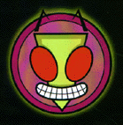

Invader
Zim is a cartoon by comic book artist Jhonen Vasquez, the mind behind 'Johnny
The Homicidal Maniac,' 'Squee,' 'I feel Sick,' 'Filler Bunny,' 'Wobbly Headed Bob,' and 'Happy Noodle Boy.' It currently airs on Nickelodeon on Sundays at
4:30 pm.
It stars an outcast Irken sent on a mission by the Irken leaders, the Almighty
Tallest, who are conducting an operation to overtake many planets, Operation
Impending Doom 2. They send him on a mission to Earth, an out-of-the-way
unwanted planet so that they can get Zim out of their fingers since he ruined
Operation Impending Doom 1. Zim travels to Earth with his newly acquired
'top-secret advancement in Irken technology', GIR., a defective robot that the
tallest put together in a matter of seconds. Once on Earth, Zim and GIR
disguise themselves as a boy and his dog (a green boy and his green dog), and
build their base to look like the surrounding houses, well, almost. Zim goes
to 'Skool' where he meets his rival, Dib. And lots of other stuff happens
including scary monkeys, squirrels, the big bang, head pigeons, and flying
pigs.
Get
Zim t-shirts, pins, stuffed toys, and more at hot topic! Kevin Manthei is
producing a Zim CD, see his site for
details.
Go
to the Zim
stuff
section for Zim character bios. See everyone from Invader Spleen to the spooky
Chihuahua.